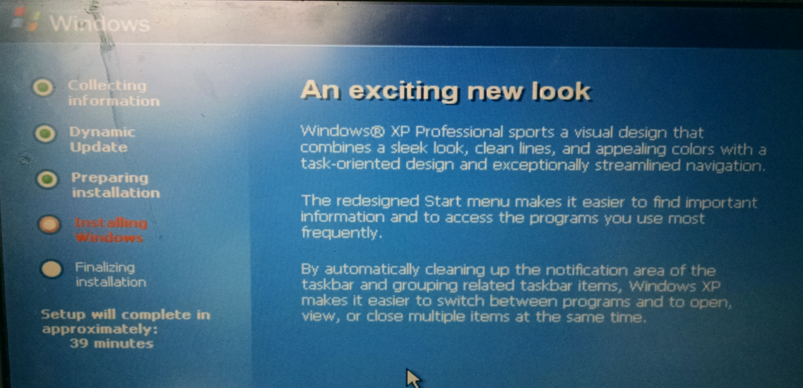
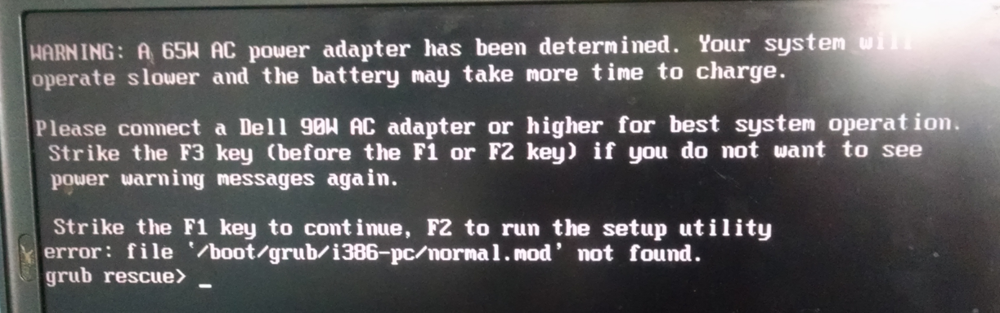

Dual Booting Windows 10 and Arch Linux - - on the HP Spectre
Posted on July 15, 2016
I recently decided I needed a new laptop for college. The HP Spectre seemed a really good choice - 6th Generation Intel i7 processor, 8 gigabytes of RAM, 256 gigabyte solid state hard drive, and the screen folds around into a tablet. But before I blew a thousand dollars on a computer, I wanted to make sure I wouldn't, you know, render it useless. Last time I attempted to dual boot Arch Linux and Windows, I screwed up and pretty much broke the Windows partition. I didn't really care that much since it was Windows 7 and I didn't have Windows on my previous laptop either. But there's plenty of software that doesn't really run in Linux, and there's value in learning to develop for multiple platforms, so I wanted to have a fresh copy of Windows 10 in my back pocket just in case.
So I did a lot of planning
I asked around until I found a computer nobody would care if I messed up - an old Dell Latitude D820 that was missing keys and didn't boot properly. I would practice the installation process on this computer to make sure I knew what I was doing, and if I messed it up, I could just reset the whole thing and try again. Some messing around with the recovery settings, and I was running a brand new copy of Windows XP.

This amused me
Manually partitioning the drive and configuring the bootloader for two operating systems is an annoyance, and last time I tried I screwed it up. Some Linux distros, however, have a graphical bootloader that does all that for you. Ubuntu, for instance, couldn't be easier to dual boot. You press a couple of buttons... and everything just works.
So this was the plan: I would first install Ubuntu, which would be easy. Then, since the disk was already parititioned and the bootloader already set up, I would simply install Arch over Ubuntu, and I wouldn't have to worry about making a partition or a GRUB menu enty or anything like that. This also seemed like a good idea to me because I had seen on the internet that other people had successfully installed Ubuntu on the HP Spectre, and their guides seemed like a good starting place.
This plan was lazy, and kind of dumb, and it would have been way more efficient to just set up the dual boot the right way, but I maintain this method streamlined the process... at least a little bit. Whatever, it worked, that's all that matters.
So this was the plan: I would first install Ubuntu, which would be easy. Then, since the disk was already parititioned and the bootloader already set up, I would simply install Arch over Ubuntu, and I wouldn't have to worry about making a partition or a GRUB menu enty or anything like that. This also seemed like a good idea to me because I had seen on the internet that other people had successfully installed Ubuntu on the HP Spectre, and their guides seemed like a good starting place.
This plan was lazy, and kind of dumb, and it would have been way more efficient to just set up the dual boot the right way, but I maintain this method streamlined the process... at least a little bit. Whatever, it worked, that's all that matters.
First Attempt
It's a good thing I tested this idea before I actually bought a new computer. First attempt, I screwed it up. Ubuntu installation went perfectly, and I had a functioning dual boot. However, in installing Arch, I stupidly forgot that by overwriting the Ubuntu partition, I was also overwriting GRUB. Upon booting, GRUB still tried to run (GRUB itself is not installed on the partition, but all its configuration information is) but immediately dropped into the rescue shell.

GRUB error (among others)
I wanted to get this right, so I started over. With Ubuntu and GRUB successfully installed once again, I copied /boot/grub from the Ubuntu partition to a flash drive. Then I installed Arch again, installed GRUB within Arch, copied the configuration directory from the flash drive, and edited grub.cfg to change every instance of 'ubuntu' to 'arch'. Rebooting showed me more errors, so I went back into the Arch chroot and edited grub.cfg again. I had to change the partition UUIDs, which I didn't realize would change when I installed a new operating system (though I probably should have). This time it booted into Arch! But the system wasn't working properly. So I got back into chroot again from the installation usb drive to install dialog, iw, and wpa_supplicant, which I should have done the first time. While there, I also made a new user and added it to the sudoers file.
And it booted just fine, both Windows and Arch. Arch was still giving me a few weird errors, but I think that had more the do with the age of the computer than the installation method. There was some kind of conflict with the PGP keys, which I resolved by Googling around and refreshing the key list. I was also getting some device warnings at boot, so I changed the partition settings in grub.cfg from read only to read/write. But after that, it was pretty much a fully functioning, dual booting system.
And it booted just fine, both Windows and Arch. Arch was still giving me a few weird errors, but I think that had more the do with the age of the computer than the installation method. There was some kind of conflict with the PGP keys, which I resolved by Googling around and refreshing the key list. I was also getting some device warnings at boot, so I changed the partition settings in grub.cfg from read only to read/write. But after that, it was pretty much a fully functioning, dual booting system.
The Actual Attempt
Bought the HP Spectre, played around with it a little bit... ironically, there was a problem with the display drivers (which I remedied by doing a system update), which kind of negates the Windows advantage of 'it works right out of the box'. But yeah, Windows 10 works just fine, so I moved on to installing Arch.
The first thing I did was disable the Windows 'Fast Boot'/'Fast Startup' feature. If I understand it correctly, Windows will often suspend the computer to RAM rather than actually turn off. This allows it to boot back up almost instantly. It also makes booting into a different operating system rocky, when Windows never shut all the way down. This feature can be easily disabled, though, through the Windows 'Power Management' menu.
In addition, the computer's UEFI firmware has a feature called 'Safe Boot' which (potentially) stops malicious software from messing with the boot sequence. This must be disabled in order to install and boot Linux (Most of the time. I believe Fedora has a secure boot plugin that allows it to run with secure boot enabled). On the HP Spectre, the secure boot feature can be disabled through the UEFI menu, accessed by holding ESC + F10 while the computer is booting (apparently Escape pauses the boot sequence, and pressing F9 or F10 gives you different menu options). I also changed the boot sequence so that the medium it would first try to boot from would be a USB stick. This way I could just put the flash drive in the computer, reboot, and it would begin the installation.
Before I started with the Linux, though, I went back to Windows and resized the system partition with the 'Disk Management' tool. This naturally has to be done to make room for the Linux partition, and though I could have done it from the Ubuntu live environment, I used Windows just to be safe.
The first thing I did was disable the Windows 'Fast Boot'/'Fast Startup' feature. If I understand it correctly, Windows will often suspend the computer to RAM rather than actually turn off. This allows it to boot back up almost instantly. It also makes booting into a different operating system rocky, when Windows never shut all the way down. This feature can be easily disabled, though, through the Windows 'Power Management' menu.
In addition, the computer's UEFI firmware has a feature called 'Safe Boot' which (potentially) stops malicious software from messing with the boot sequence. This must be disabled in order to install and boot Linux (Most of the time. I believe Fedora has a secure boot plugin that allows it to run with secure boot enabled). On the HP Spectre, the secure boot feature can be disabled through the UEFI menu, accessed by holding ESC + F10 while the computer is booting (apparently Escape pauses the boot sequence, and pressing F9 or F10 gives you different menu options). I also changed the boot sequence so that the medium it would first try to boot from would be a USB stick. This way I could just put the flash drive in the computer, reboot, and it would begin the installation.
Before I started with the Linux, though, I went back to Windows and resized the system partition with the 'Disk Management' tool. This naturally has to be done to make room for the Linux partition, and though I could have done it from the Ubuntu live environment, I used Windows just to be safe.
A note about partitions
Windows is kind of particular about its partitions. There will always be an EFI partition, a 'Microsoft reserved' partition, and the C drive (which is of type NTFS) on any Windows UEFI system. According to the Arch Wiki, deleting any of these will wreck Windows. There may also be a couple of Windows recovery partitions - my laptop has 2, both of type NTFS.
Naturally, before trying to dual boot I did a bit of reading about partitions and how to not mess up Windows. This should be a prerequisite for anyone trying to do the same. But if you know what you're doing, it is safe to resize the NTFS partition to make space for Linux. Then I booted into a Ubuntu live USB environment, and used the graphical install tool to create an ext4 partition as the root mount point ('/') and a significantly smaller swap partition.
Naturally, before trying to dual boot I did a bit of reading about partitions and how to not mess up Windows. This should be a prerequisite for anyone trying to do the same. But if you know what you're doing, it is safe to resize the NTFS partition to make space for Linux. Then I booted into a Ubuntu live USB environment, and used the graphical install tool to create an ext4 partition as the root mount point ('/') and a significantly smaller swap partition.
Back to the installation part
Ubuntu installation once again worked without a problem. I did the whole thing with copying /boot/grub to a flash drive and trying to copy it into a new Arch installation... but after installing Arch and GRUB and editing grub.cfg, booting dropped me into the GRUB rescue console without an error. I Googled around some more, and apparently with UEFI certain GRUB configuration information is stored in the EFI partition instead of the main one... so I folded and configured GRUB the old fashioned way, by adding my own menu entries to /etc/grub.d/40_custom. And then everything worked perfectly!
There you go - roundabout way of dual booting Arch Linux and Windows 10. The main purpose of this writeup is to show that yes, it is possible, which is more information than I had when I started (I found several online guides that talked about installing Ubuntu, but none referring to Arch). I maintain that using Ubuntu to partition the disk was at least easier than, say, using fdisk from the Arch console, and it was therefore worth it. I have seen complaints on the internet of certain things, like WiFi or accelerometers, not working properly with Linux on the HP Spectre, but I have not had any problems at all. Perhaps hardware and driver support has improved since those issues were raised. All I know is, the HP Spectre is a solid laptop that runs Linux well and was worth the money and effort.
There you go - roundabout way of dual booting Arch Linux and Windows 10. The main purpose of this writeup is to show that yes, it is possible, which is more information than I had when I started (I found several online guides that talked about installing Ubuntu, but none referring to Arch). I maintain that using Ubuntu to partition the disk was at least easier than, say, using fdisk from the Arch console, and it was therefore worth it. I have seen complaints on the internet of certain things, like WiFi or accelerometers, not working properly with Linux on the HP Spectre, but I have not had any problems at all. Perhaps hardware and driver support has improved since those issues were raised. All I know is, the HP Spectre is a solid laptop that runs Linux well and was worth the money and effort.
This website was produced by Sean Patrick Doyle and published in 2016. Anything here may be used freely, if you want, but please give me credit.